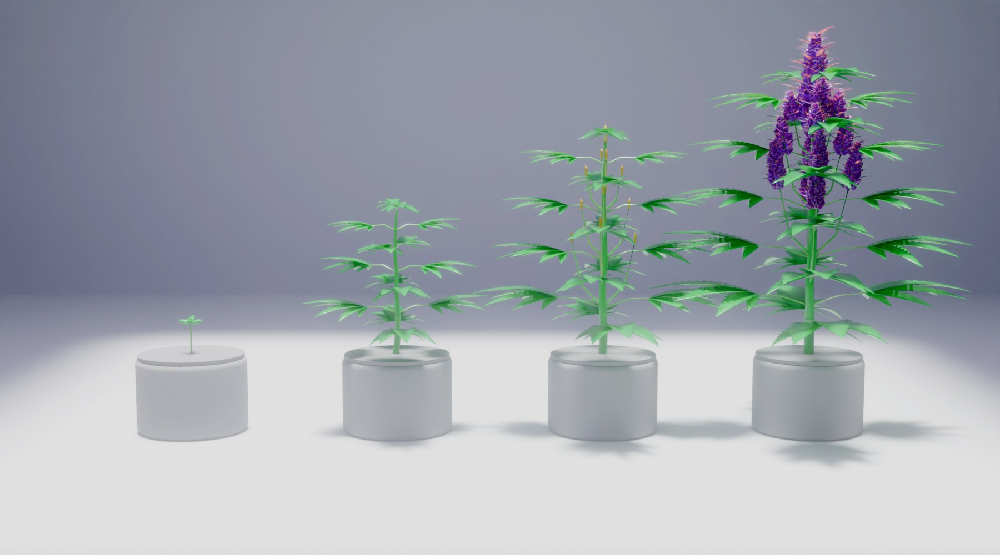

Two autoflowers under one light, run by the same AI
What it would take to run two autoflowers in a garage with the garden's AI app: the setup, the wiring, the grow stages and a costed parts list. Nothing here is built yet. The pictures are renders, not photos.
Concept · not builtSame app and dashboard as the garden bed
What the AI would do
Planned behaviour, not running yet. Sensing, dosed watering and alerts are what the garden node is planned to do; VPD, the light timer, the fan and the macro camera would be new.
- Sense
Soil moisture in each pot, air temperature and humidity at the canopy, a canopy photo every few hours.
- Decide
The app works out VPD, counts days from sprout, and picks when to water and how much for that stage.
- Act
The ESP32 runs the pump for a measured dose, keeps the light on its 18/6 timer and switches the fan when humidity climbs.
- Tell
Alerts on your phone: “reservoir low”, “humid night, fan on”, “first pistils, stop training”, “trichomes ready to check”.
Physical setup · 8 steps
No box to build: an open setup under one grow light. Allow an afternoon.
- Step 01
Pick the spot
Garage corner near a power point, out of foot traffic. Level floor, a pale tray or board as the base, saucers under each pot. Keep the walls nearby pale or white to bounce light back.
- Step 02
Hang the light
Two ceiling hooks above the centre of the tray, light on rope ratchets so it floats 30–55 cm above the tops (follow the maker's chart). Raise it as the plants stretch. Keep it clear of the tops.
- Step 03
Pots and mix
Start seeds straight in their final 11–15 L fabric pots: autos hate transplanting. Light mix, ~30% perlite, pH 6.2–6.8. Two plants is plenty under one light.
- Step 04
Probes and air sensor
One capacitive moisture probe per pot, 10 cm from the stem, angled in. The temp/humidity sensor hangs at canopy height, shaded from the light so it reads the air, not the LED.
- Step 05
Watering line
Reservoir tub on the floor beside the tray, pump inside it. 4 mm tube to a ring dripper in each pot. Test with the pump on for 10 s and measure the volume.
- Step 06
Camera
ESP32-CAM on a small stand looking at the canopy from the side. A clip-on macro lens is swapped in during ripening.
- Step 07
Wire the node
ESP32 on the wall above the reservoir, in a small box. Probes and sensor to its pins, pump and fan through the relay, light on the smart plug. One 12 V supply, fused, with a 5 V buck for the board.
- Step 08
Connect to the app
Flash the same firmware as the garden node and join home Wi-Fi. It shows up in the AI app as a second zone, “Autoflower”, on the same dashboard.
How it connects
- 12 V supply from mains, fused
- ↓ powers
- ESP32 node beside the tray: reads 2 moisture probes and the air sensor
- ↓ drives
- Pump and fan via the relay · grow light via the smart plug
- ↓ Wi-Fi
- Home Wi-Fi router → AI app + dashboard, same as the garden
Shared with the garden
Same AI app, same dashboard, same ESP32 firmware, same alerts. The garage node is just another zone. No Home Assistant, no hub.
Added for autoflowers
Air temp + humidity for VPD, a light timer, a small fan, a reservoir pump instead of a tap valve, and a macro lens for trichome checks.
Power: mains through one fused 12 V supply, no battery or solar needed indoors. Wi-Fi: the board's antenna is enough in a garage with 2+ bars; add an external-antenna ESP32 if it drops out.
The grow, at a glance

Seedling
Small rings of water. VPD 0.4–0.8 kPa.
Veg
Bend and tie (LST). Light feed. VPD 0.8–1.1.
Stretch + bulk
Raise the light. Fan on humid nights. VPD 1.0–1.4.
Ripening
Plain water last 10–14 days. Check trichomes.
Harvest by the camera
The macro lens shows the trichomes. Mostly cloudy with 10–20% amber is the usual target. The plan is for the app to track the change each week and give a rough harvest countdown, as a prompt, not a promise.
Parts list · AUD
Cheapest sensible parts: Marketplace second-hand first, AliExpress for the electronics. All prices are estimates (Nov 2026). Nothing has been bought.
$83–175
Light, hanging kit, pots, mix, tray.
$76–164
ESP32, sensors, pump, camera, power.
$159–339
Less if you already have the garden kit spares.
| Part | Group | Typical source | Est. |
|---|---|---|---|
| Grow light1 × full-spectrum LED, 100–150 W real draw (purple/blurple fine) | Grow space | AliExpress / Marketplace | $40–90 est. |
| Hanging kitAdjustable rope ratchets ×2 + ceiling hooks | Grow space | AliExpress / Bunnings | $8–15 est. |
| Pots + mix2 × 11–15 L fabric pots, light mix with ~30% perlite | Grow space | Bunnings / Marketplace | $35–55 est. |
| Tray basePale tray / ply board + saucers under the pots | Grow space | Marketplace (often free) | $0–15 est. |
| ESP32 nodeESP32 dev board (same firmware as the garden node) | AI + watering | AliExpress | $6–10 est. |
| Soil moisture ×2Capacitive v2.0 probes, one per pot | AI + watering | AliExpress | $4–8 est. |
| Air sensorSHT31 or BME280 temp + humidity (for VPD) | AI + watering | AliExpress | $4–9 est. |
| Pump + relay12 V mini diaphragm pump, 2-ch relay/MOSFET, 4 mm tubing + drippers | AI + watering | AliExpress | $15–25 est. |
| Reservoir10–20 L lidded tub with the pump inside | AI + watering | Marketplace / Kmart | $0–12 est. |
| Light controlSmart plug or relay on the ESP32 (18/6 timer) | AI + watering | AliExpress / Marketplace | $8–15 est. |
| AirSmall clip fan for gentle air movement | AI + watering | Marketplace | $0–20 est. |
| CameraESP32-CAM with OV2640 (canopy + clip-on macro lens) | AI + watering | AliExpress | $12–20 est. |
| Power12 V 3 A supply + 5 V buck, inline fuse | AI + watering | AliExpress | $12–20 est. |
| pH pen + loupeCheap pH pen and 60× loupe for trichome checks | AI + watering | AliExpress | $15–25 est. |
Up close
Colourful varieties
Autoflower strains known for colour. Colour comes from genetics first; cooler nights (roughly 5–10 °C below day temp) in the last weeks of flower help bring out the purples. The orange is in the pistils, not the leaves.
- Blackberry Auto (Fast Buds): dark purple, almost black buds. source
- Purple Punch Auto (Barney's Farm): purple and lime buds. source
- Orange Sherbet Auto (Fast Buds): light green buds, thick bright orange pistils. source
- Tangie Auto (Fast Buds): green buds, purple hints, orange pistils. source
Renders show one purple plant (Blackberry/Purple Punch type) and one orange-pistil plant (Orange Sherbet type). Stylised, not exact.